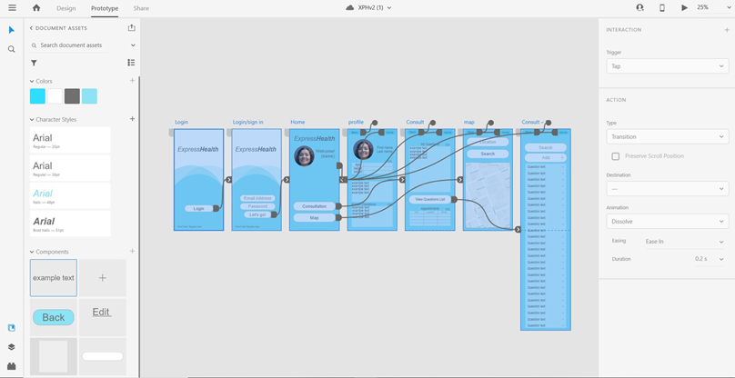

Artifact
The current stage of our project is a clickable prototype, the purpose this artifact is to convey the layout and design of the application to the engineers, who will develop the back end of the app. When creating this prototype, we considered key design principles, the colour scheme and typeface, as well as making the app easy and simple to navigate and use.
We wanted the design to have a strong element of user-friendliness. To achieve this, we used large and easy to identify buttons and text, as well as keeping the pages simple. We kept a limited number of pages, to keep the navigation simple with back and home buttons, back taking the user to the previous page and home button taking them to the main page.
We used the Ariel font because of its easy legibility, alternating the typeface colour between grey and light blue depending on the background. The use of light blue as the main colour was a conscious choice, as mentioned in the Project Description it promotes logic and intellectual thought.
This artifact will be passed on to the engineering team for further development and construction of the app.
Project Description
text here
Overview
Prestige Worldwide presents a project, the Express Health app. Express Health is an Android smartphone app that helps patients better express themselves and manage medical data using editable Question Prompt Lists (QPLs) and recording features. A QPL is a checklist of questions that involves the physical and psychosocial aspects of illnesses, diseases and treatments that patients want to discuss with HCPs (Eggly et al. 2013).
Express Health has a user-friendly interface that is organised, visually appealing and easy to navigate for patients that are not tech-savvy. Firstly, when customers start using the app, they will have to make accounts and can enter in some basic personal information such as name, age and medical conditions. QPLs differentiated by diseases and illnesses are available and users will be able to add, delete and edit the questions. Moreover, pictures and audio and video recordings can be taken and/or added to the QPL. This feature is placed under each question of the QPL so that recordings of the answer to each question can be easily found. A recording feature is also present at the top of the QPL if the customer wants to use it without relation to each question. The user’s data input will be saved on a private cloud and can be accessed from any Android smartphone if the user’s login details are correct.
Although, the editable QPL and recording features are the focus of this app, there are also side features to further assist patients and increase business viability. One of the features is a calendar for marking down consultation times which can help users stay organised and plan ahead. Push notifications can be sent to remind users about consultation times, even if the app is not open. Additionally, there is a location-based service for medical emergencies or when in an unfamiliar environment. This service can detect nearby medical practices and hospitals and provide the fastest routes to these places.
Patients can have issues with health-care professionals (HCPs) during medical consultations. Medical consultations are time limited and can be stressful, embarrassing or tiring for patients. Moreover, patients can be forgetful, pressured, disorganised, confused or discouraged from openly communicating with their HCPs. These can lead to patient dissatisfaction, increased anxiety, poor disease management, a breakdown in trust and knowledge sharing between the HCP and the patient and both parties making uninformed decisions (Street et al. 2010). Ultimately, the lack of organisation and proper communication is restricting quality healthcare. Misdiagnoses could be reduced, and more personalised advice could be given by HCPs if they were more aware of a patients’ illnesses and circumstances (Street et al. 2010) Furthermore, Rose (2017) pointed out that patients with severe chronic illnesses must manage a large amount of data, stress and several consultations. Additionally, after the consultations, patients may not remember or be perplexed about the consultation’s contents. Thus, it is important for patients to have a way to reliably record information in a well-organised manner.
Research strongly suggested that patients utilising QPLs in consultations had led to patients being encouraged and reminded to ask questions, reduced anxiety, increased satisfaction, improved self-management/disease management, enhanced information exchange, helped patients make better informed decisions and improved adherence to treatment regimens (Lukasczik et al. 2020). Similarly, recording consultations had resulted in better informational recall, enhanced decision-making, increased psychological well-being and lowered decision regret (Rieger et al. 2017). Moreover, when patients better understood and retained their own medical data because of recordings, it further encouraged patients to be more expressive to HCPs (Lukasczik et al. 2020). Furthermore, recordings have assisted family and friends to effectively take part in the decision-making and better care for the patients because they are better informed (Rieger et al. 2017). Therefore, the use of QPLs and recordings are highly beneficial to patients.
Prestige Worldwide created Express Health because of the issues mentioned that resulted from deficient information recording and a lack of proper communication between patients and HCPs. The project’s motivation is to help patients through editable QPLs and reliable recording features. Furthermore, no app seems to have been developed with the editable QPL feature so making the first app of this kind is an exciting opportunity for the team.
With the rising number of mobile phone owners due to the mobile phones’ portability and ease of use, the mobile Health (mHealth) industry has grown to the point that there are millions of users accessing mHealth apps per minute (Rose 2017). Additionally, the Grand Review Research (2020) has predicted the global mHealth market to be estimated at USD 316.8 billion by 2027. Express Health has taken part in this IT trend to provide a relevant, innovative and likely profitable solution.
Working on this project will show future employers that the members can work cohesively as a team and have project management skills such as leadership, communication, scheduling, risk management and negotiating. Additionally, this project demonstrates that the team was able to analyze current problems and IT trends. Then, critical thinking, IT knowledge and skills and research were used to design a creative solution.
The landscape for the two main features will be discussed. Typically, QPLs are provided by HCPs or downloaded from the internet, printed on paper and brought to consultations (Eggly et al. 2013). Online search engines also indicated a lack of relevant results for apps with editable QPLs. Therefore, the editable QPLs feature is assumed to be Express Health’s unique selling point. This feature will allow users to easily edit QPLs. QPLs can also be securely stored and easily accessed as most individuals regularly have their phones with them. Conversely, Lipson-Smith et al. (2019) stated that apps with features involving recording consultations, is a growing market in mHealth. Medcorder and Abridge are prominent apps that were founded in 2018 and specifically designed for recording medical consultations (Abridge AI Inc. 2020; Medcorder Inc. 2020). These apps also have other features that Express Health does not, such as transcribing recordings, medical dictionaries, revision technology that highlights important information and group chats for communicating with family and friends (Abridge AI Inc. 2020; Medcorder Inc. 2020). Furthermore, there are other recording apps or features that are not created specifically for medical consultations but can be used in these situations (Rev 2020). For instance, the free audio and video recording features in smartphones and apps like Rev (2020) which is an audio recording and transcribing app that several professionals, mostly writers, researchers and journalists, use. Although, the recording app market is highly competitive, Express Health's two main features are complementary and supports the team’s aims. Hence, the recording feature was added to Express Health.
The landscape for the supporting features will be examined. The calendar and push notifications feature are not unique and is available for free in smartphones and other apps like Medcorder (Medcorder Inc. 2020). Nevertheless, having all relevant information in one place that can be securely stored is ideal, as it is more convenient and medical consultation times can be sensitive information. Thus, this feature was added to Express Health. The geolocation feature is common in mHealth apps too. Location-based services in mHealth are usually involved in medical emergency apps that quickly alerts first responders of a medical emergency and the location of the patient (Gaziel-Yablowitz & Schwartz 2018). An example, is the Emergency Plus app which was created by Australia’s government and emergency services (Australian Government State and Territory Emergency Services n.d.). This feature is also common in apps for users that are abroad or in unfamiliar locations and want to identify the nearest medical care facilities (Gaziel-Yablowitz & Schwartz 2018). TravelSmart uses GPS capabilities to provide its users with the contacts of emergency services by destination in 129 countries (Allianz Global Assistance Service Company 2020). The use of geolocation in Express Health is to locate proximate medical facilities using the GPS location of the use. This is not unique but offers convenience to our targeted audience of patients that have serious chronic diseases. It can help these users when they need to see HCPs soon and are in an unfamiliar environment. It is convenient to have access to a map feature within the app so that users will not have to alternate between map applications and Express Health.
References
Abridge AI Inc. 2020, About, Abridge AI Inc., viewed 14 November 2020,
Allianz Global Assistance Company Service, TravelSmart, Allianz Global Assistance Company Service, viewed 16 November 2020,
Australian Government State and Territory Emergency Services n.d,, Emergency+ app, Australian Government State and Territory Emergency Services, viewed 16 November 2020,
Eggly, S, Tkatch, R, Penner, L A, Mabunda, L, Hudson, J, Chapman, R, Griggs, J J, Brown, R & Albrecht, T 2013, 'Development of a Question Prompt List as a communication intervention to reduce racial disparities in cancer treatment', Journal of Cancer Education, vol. 28, no. 2, pp. 282-289, viewed 13 November 2020, ProQuest Central database.
Gaziel-Yablowitz, M & Schwartz, D 2018, ‘A review and assessment framework for mobile-based emergency intervention apps’, ACM Computing Surveys, vol. 51, no. 1, pp. 1-32, viewed 16 November 2020, ACM Digital Library database.
Grand Review Research 2020, mHealth market size worth 316.8 billion by 2027, market report, Grand Review Research, viewed 13 November 2020,
Lipson-Smith, R, White, F, White, A, Serong, L, Cooper, G, Price-Bell, G & Hyatt, A 2019, 'Co-design of a consultation audio-recording mobile app for people with cancer: The SecondEars app', JMIR Formative Research, vol. 3, no. 1, p. e11111-e11111, viewed 13 November 2020, PubMed Central database.
Lukasczik, M, Gerlich, C, Wolf, H D & Vogel, H 2020, 'Beyond oncology: Question Prompt Lists in healthcare-A scoping review protocol', Methods Protoc., vol. 3, no. 1, p. 9, viewed 13 November 2020, PubMed Central database.
Medcorder Inc. 2020, About, Medcorder Inc., viewed 14 November 2020,
Rev 2020, About Rev, Rev, viewed 14 November 2020,
Rieger, K L, Hack, T F, Beaver, K & Schofield, P 2017, 'Should consultation recording use be a practice standard? A systematic review of the effectiveness and implementation of consultation recordings', Psycho-oncology, vol. 27, no. 4, pp. 1121-1128, viewed 13 November 2020, Wiley Online Library Journals database.
Rose, K J 2017, 'Mobile health: Telemedicine's latest wave but this time it’s for real', in L Menvielle, AF Audrain-Pontevia, W Menvielle (eds), The digitization of healthcare new challenges and opportunities, 1st edn, Palgrave Macmillan, London, pp. 155-170.
Street, R L, Slee, C, Kalauokalani, D K, Dean, D E, Tancredi, D J & Kravitz, R L 2010, 'Improving physician-patient communication about cancer pain with a tailored education-coaching intervention', Patient Education and Counseling, vol. 80, no. 1, pp. 42-47, viewed 13 November 2020, Elsevier Science Direct Journals database.
Detailed Description
Aims
The aim is to construct a smartphone app prototype in Adobe XD to display our vision for Express Health and to show the codes we plan to use for creating the app. Express Health’s purpose is to help patients be more expressive with their HCPs and to reliably record medical consultations for patients. To achieve this, we have set out the following goals that the prototype should display: Being able to create personal accounts, accepting user input for basic personal information, being able to edit and use the editable QPLs which also includes the recording features, being able to edit consultation times in the calendar feature and being able to use the geolocation feature. The codes that will be used to program these features will be included in the Plans and Progresses section.
Personal Accounts
Personal accounts are an important feature to have, this stores the user’s personal information, such as their current height, weight and age, as well as allowing them to input any known allergies they have, i.e. penicillin or other types of medications, and any known medical conditions they may have, i.e. Arthritis or Asthma. This will help users keep track of their own medical information.
The Question Prompt List
The Question Prompt List is the main focus of Express Health. For this feature we want to have a vast number of QPL questions available for the user, covering various medical conditions and treatments. This is to help the user during a consultation by providing them with questions to ask their HCP. The user will also be able to edit, delete and add their own questions. Moreover, they will be able to add pictures and voice and video recordings.
Calendar
The calendar feature will allow the user to store and edit their appointment times in a virtual calendar, this will include the time, date and which doctor the consultation is with. Another element of this feature will be the app sending push notifications to remind the user of upcoming appointments. This feature is to help the user to keep track of appointments.
Geolocation
The Geolocation will use a map element. This map is for the user to easily locate and access directions to medical facilities close to the user’s current location, using the user's current IP address. The idea behind this was to allow the user to access a direct map rather than having to switch in between apps, this is for convenience to the user.
Plans and Progress
This project idea began with finding a solution for a relative whom was struggling to remember most of what doctors have said about her chronic illnesses. The relative had an illness that required regular medical consultations and several treatments so keeping track and managing all this information was laborious. Using knowledge from a psychology health management class about QPLs and inspired by the trendy mHealth industry, Express Health’s initial project idea was born. The idea involved a smartphone app that had QPLs with editable questions. This was to help patients effectively communicate with HCPs and plan what questions to ask before seeing HCPs.
After researching online about similar apps like Medcorder and Abridge, the recording features and adding pictures features were integrated into the QPLs. These were done to further assist users with efficient information management and sharing. Another intention of the recording features was to hold HCPs accountable for their advice and conduct during medical consultations. Poor communication on the part of HCPs have led to misdiagnoses, misunderstandings and either no or unnecessary medical tests (Kirby, Kirby & Sokolove 2015). This issue is the most common reason for litigations against HCPs (Kirby, Kirby & Sokolove 2015). Moreover, it will help keep patients safe from the unethical behavior of HCPs like sexual misconduct. Bismark et al. (2020) found that in Australia, sexual misconduct is rare, only 0.2% of registered health practitioners were reported from 2011-2016. However, sexual misconduct by HCPs generally have severe negative effects on patients, not just because of the nature of the misconduct, but also because patients tend to be vulnerable and trusting when interacting with HCPs (Bismark et al. 2020). Hence, the current version of the editable QPLs was created for A1.
The target audience for the app was the general public. The reasoning for that was that most people go to medical consultations and the app could assist all those individuals.
After receiving feedback for A1, the team researched and discussed how to improve the project idea which was too simplistic. The team decided to add an online medical consultation feature. This is a timely addition because of the Covid-19 pandemic. There is high demand for telemedicine apps as most people preferred having minimum contact with others to prevent infection (Bakhtiar, Elbuluk & Lipoff 2020). Other typical features of online consultation apps such as prescription services and sharing of medical information and recorded medical consultations through email were also added (Bakhtiar, Elbuluk & Lipoff 2020).
As per the suggestions of the A1 feedback, the legal aspects of recording consultations were also further researched. Recording consultations was legal in all states of Australia as long as all parties involved consented to it (Prictor, Johnston & Hyatt 2020). The specifics of the laws in each state is shown in Table 1 below.
Table 1 Australian laws for patient-led recordings

(Modified from source: Prictor, Johnston & Hyatt 2020)
When we received feedback for the new project idea, A2, we realized that the added features are too complex and large to implement. Although, the technical aspects were not complicated to carry out, we lacked the expertise and personnel for detailed planning and research. There are also multiple individuals and institutions that needs to be involved in making online consultations possible such as HCPs, lawyers and medical facilities. For example, A2 features such as online web consultations with GPs will require ongoing payment and maintenance with HCPs and high-level programmers. Overall, the A2 project plan is not feasible for a startup group; however, these features may be possible post-release and if the app is successful. For practical purposes, we revised our project idea.
After careful consideration, the group has elected to use a revised adaptation of the original project idea, produced in A1, as the final project plan. The final project plan will reject most features of the A2 project idea and will comprise of the following features:
- A login form to permit access to saved data.
- Editable QPLs – adding/editing questions, inputting images, videos, or voice recordings.
- Recording consultations.
- Identify and display route to the nearest medical practitioner or hospital - through Google Maps
Launching an app is a challenging task in the modern-day online landscape as the competition is fierce, and markets are oversaturated. However, an editable QPL (a unique feature), will provide a competitive advantage over other businesses. The limited features on the final project plan has also concentrated the group’s efforts, allowing us to deliver higher quality results. It may produce a polished, optimised and user convenient app.
Final project plan
- Introduced changes to the project plan are:
- Improved business model.
- Solution and procedure for advertisement.
- Solution for storing user data.
- Administrative requirements.
- Target audience changed to patients with chronic illnesses that regularly goes to medical consultations.
Business Model
A business model is a series of strategies to identify and anticipate trends and challenges for the company to make a profit.
- Value Proposition: What are we building and for who?
- It is difficult to think when we are under pressure, we become flustered, forgetful and miss out key details and intricacies. We can experience these symptoms when we attend our medical consultations. The solution to this problem is offered in Express Health, an editable QPL which makes the patient’s life easier as well as help HCPs do their job well.
- Target audience/customers
- Customers with health issues that must visit the doctors often. Most research involving QPLs and recording medical consultations are based on this population so it is more likely that our features will be more useful to this group than for other types of patients (Lukasczik et al. 2020; Rieger et al. 2017). Moreover, this customer type is compatible with the business model of Express Health which is dependent on long-term interest, use and investment. The app might be considered too expensive or unnecessary for customers that do not frequently need to see HCPs.
- Channels
- Advertise in doctor’s waiting rooms with posters and videos. The A5 presentation video can be shown in the waiting room. This is where the target audiences are located. Client contact details for advertising, can be acquired through online research. https://healthengine.com.au/ provides contact details for Practices’, including phone numbers and websites.
- Online advertising: Social media and online advertisements can increase brand presence and awareness. Furthermore, reviews on websites such as Trustpilot, have a significant influence on the outlook of this app.
- Customer relationships/Marketing
- Implement an effective marketing strategy.
- Provide an outstanding service.
- Email marketing campaigns to retain customers and nature potential leads.
- Discount pricing strategies (e.g., “Subscribe within the next 2 hours to receive 30% discount).
- Revenue Steams
- Subscription based - 60-day trial. Revenue stream can be optimised with user feedback, after the product has been released.
- Resources: what are required to make the business model work?
- Loan from a bank.
- Programmers.
- Contact with HCPs for advertising purposes.
- Lawyers for creating advertising contracts.
- Tax agent for filing tax returns – businesses have many expenses with allowable deductions.
- Activities: What are the most important things a company must do to make the business model work?
- Build and maintain relationships with HCPs to continue advertisements.
- Provide a flawless experience for the users.
- Costs: What are the costs and expenses to operate the business.
- HCPs to create QPLs.
- Programmers to create the app.
- Tax agent.
- Lawyer.
- Onetime payment of $25 to publish the app on the Play Store.
- A competitive strategy: How do we rise above the competition? (Example: Walmart prioritised rural customers).
- We offer a unique product – editable QPLs.
- We have an effective marketing strategy.
Solution and procedure for advertisement
Advertisements can be displayed on posters and on TVs in a medical clinic’s or hospital’s waiting rooms. Ads can be organised with backing clients by creating a contract. A formal contract, as detailed on the Australian government Business website, requires the details of both parties (ABN, signature etc.), description of service, payment details, intellectual property rights, obligations, restraints of trades etc (Business 2014). A lawyer can help with drafting a contract. An informal contract can be created through clearly expressed agreements, which should be documented but not necessary. However, a documented contract is more reliable. Advertising locations such as clinics and hospitals will need to be contacted via email, telephone or face-to-face meetings to propose this product.
Solution for storing user data
Express Health will use a relationship database, which uses relational model to store information in rows and columns, similar to an Excel spreadsheet, to access, modify or update data. This database uses SQL (structured query language) for programming purposes.
Storing data in a relationship database enables the user to login in from different devices to access the same stored data. This is a notable feature in this app, as it enables users to login from different devices and have access to saved content.
Business registration and admin
- Payment
- A bank account with the business name is necessary. This requires a tax file number (TFN) and an associated Australian business number (ABN).
- Payment gateways are required to receive payments from customers. Payment gateways such as: eWay, SecurePay, Square, WorldPay, Pin Payments and 2checkOut are trusted and reputable for businesses in Australia.
- Record keeping
- Businesses can claim deductions to reduce their taxable income. This project has several anticipated allowable deductions (expenses for doctors, expenses for advertising) and these tax affairs, along with tax returns and business activity statements (BAS) require punctual lodgment. Furthermore, if the app makes a profit, the business will have increasingly complex tax affairs. Therefore, a tax agent is recommended.
Google Maps
Google Maps and its functions can be added to Express Health App with the help of a Maps SDK (software development kit) for Android. An SDK is a pre-built framework of functions that can be modified to suit the programmer’s needs. This accelerates application creation.
- Android Studio is recommended.
- Install Google Play services SDK and add Google Play services to Android Studio.
- Set up a Google Maps API key
- Examine and modify the code – instructions and documentation available here.
- Debug the software. (‘Getting started with Google Maps Platform’ 2020)
Further information is available here (https://developers.google.com/maps/gmp-get-started)
I (Aden) have taken on the role of UI designer, and I have been using Adobe XD v34.1 to design the prototype for our application. I am hoping to achieve an easy to use and effectively helpful design that is aesthetically pleasing and easy to navigate, using a light blue and a medium grey as the main colours for the design.
Adobe XD is a great program for wireframing web and app designs. It is quite easy to use and provides access to several plugins to help the designer with design and functionality. Plugins that I have used are Widgets for XD for the Navbar and Fancy Maps for the map/GPS.
The application will go through alpha and beta stages with users testing for each before a final version is released. The final version will receive updates to fix any bugs, improve functionality and add more questions to the always growing question prompt list. The alpha stage will be basic navigation through the app with editable profile, appointment and calendar, editable consultation page where the user can add questions, they would like to ask their doctor from a question prompt list, and their own questions with an option for editing QPL questions.
The editable QPLs are something that other apps does not have available for users. We believe that having the option to select from a list of questions and being able to add and edit your own questions will help users to get the best possible advice from their next GP visit. The editable QPL will give the user a more unique and user-friendly experience, this is an important feature that separates Express Health from other health and medical related apps.
The home page will allow the user to access each of the pages, Consultation, Map and Profile, and will be click-able to access each page. This is to have an easy navigation process throughout the app for users who are less tech savvy and general ease of use.
For the colour scheme of the design, I chose a light blue, white and grey. Blue is a primary colour that promotes logic, reason and intellectual thought (Kurt & Osueke 2014). This colour would stimulate the users’ brains and moods, preparing them for the app’s purpose, information sharing, management and analysis. I used grey for lines to match the light nature of the blue and white for the larger backgrounds. These three colours are aesthetically pleasing and work well together.
The profile page will be able to be edited to keep track of the user's basic information such as age, height, weight as well as any known medical conditions and allergies they may have. This information will be able to be edited and updated by the user themselves. In later versions this information may be shared with the user’s HCP, thus bettering the results and experience of the user.
The calendar page will be important for keeping track of appointments, this will be edited by the user to input their appointment details. In the alpha stage it will have the basic calendar and an appointment schedule detailing when the appointment is and with which doctor. In future versions this could be changed to include more information.
The consultation page will be a focal point of the Express Health app, this is where the user will be able to access and choose, edit and add their own questions. The user will be able to make their own list of questions they will want to ask their doctor during a consultation. Being able to edit and add their own questions will make it a more personalised experience for the user. This will be able to help the user with difficult and potentially embarrassing questions. The question prompt list is a key element to make this app effective and help users achieve the best possible results from consultations.
The map is a useful feature for locating and getting directions to a GP or doctors’ offices in the immediate local area, without having to rely on google maps. Having this function in the app itself correlates with the overall theme of ease of use, being able to locate the doctor's office without having to switch between apps.
Throughout the design and wireframing process, I have been changing and experimenting with potential design details like the simple bubble design of the opening page and with the grid layouts for text information. This is to maintain ease of use and set a familiarity with text input areas. I used Arial for the font throughout because it is easy to read and has a smooth typeface.
References
Bakhtiar, M, Elbuluk, N & Lipoff, J B 2020, ‘The digital divide: How COVID-19’s telemedicine expansion could exacerbate disparities’, Journal of the American Academy of Dermatology, vol. 83, no. 5, pp. e345-e346, viewed 18 November 2020, Elsevier Science Direct Journals Complete database.
Bismark, M M, Studdert, D M, Morton, K, Paterson, R, Spittal, M J & Taouk, Y 2020, ‘Sexual misconduct by health professionals in Australia, 2011-2016: a retrospective analysis of notifications to health regulators’, The Medical Journal of Australia, vol. 213, no. 5, pp. 218-224, viewed 10 November 2020, Wiley Online Library Archive database.
Business, June 2020, How to prepare a contract, Australian Government, viewed 09/11/2020 < https://business.gov.au/Products-and-services/Contracts-and-tenders/How-to-prepare-a-contract>.
Kirby, R P, Kirby, J J & Sokolove, P E 2015, ‘When doctors don’t listen: How to avoid misdiagnoses and unnecessary tests’, Academic Emergency Medicine, vol. 22, no. 1, p. e5-6, viewed 10 November 2020, Wiley Online Library Free Content database.
Kurt, S & Osueke, K K 2014, 'The effects of color on the moods of college students', Sage Open, vol. 4, no. 1, viewed 10 November 2020, SAGE Open Access Journals database.
Lukasczik, M, Gerlich, C, Wolf, H D & Vogel, H 2020, 'Beyond oncology: Question Prompt Lists in healthcare-A scoping review protocol', Methods Protoc., vol. 3, no. 1, p. 9, viewed 13 November 2020, PubMed Central database.
Prictor, M, Johnston, C & Hyatt, A 2020, ‘Overt and covert recordings of health care consultations in Australia: some legal considerations’, The Medical Journal of Australia, vol. 166, no. 1, viewed 14 November 2020, Wiley Online Library Archive database.
Rieger, K L, Hack, T F, Beaver, K & Schofield, P 2017, 'Should consultation recording use be a practice standard? A systematic review of the effectiveness and implementation of consultation recordings', Psycho-oncology, vol. 27, no. 4, pp. 1121-1128, viewed 13 November 2020, Wiley Online Library Journals database.
Roles
When it comes to making an app there are many different roles, Deon and Mya are the Lead Developers, leading us in the right direction and making sure deadlines are met. Aden is the UI Designer and is responsible for the design and prototyping of the app. Glenn is the Technical Developer, reviewing the work and assisting the others with research and documentation.
Prestige Worldwide is a small team of only four people, as well as our defined roles, we take on multiple other roles simultaneously. We all contribute to the research required and to the user experience. It has taken some practice, but we believe this is what will work. The larger tasks, such as research and UX are shared amongst the team to make sure the workload is more evenly spread and delegated. The defined roles that we have were chosen ourselves are based on the strengths that we already possess.
We have taken on both defined roles and undefined, the reason behind that is to focus our strengths on the individual parts such as the organisation of work and direction of the project, the design of the app itself and technical application, then tackling the bulk tasks as a team.
Scope and Limits
Project: Express Health mobile application
Ultimate Goal: Develop a fully functioning smartphone application available to the Public
Assignment Goal: Construct a smartphone app prototype shows what the app UI and features will look like
Time: 1 month
Our ultimate goal is to develop a Health application with editable QPLs that is available to the public. There is only one month to complete this assessment so it probably wouldn't be realistic to expect a fully functioning app to be developed within that timeframe. Even experienced programmers can take several months to develop a simple app. It was determined that while we aren't making it on Shark Tank within that timeframe, a prototype of what the app may look like is a more realistic goal.
The group also has limited experience with high level programming. Learning the appropriate programming languages required for developing a mobile application takes time and has a steep learning curve. Learning programming to a sufficient level for developing complex applications wouldn't be realistic.
Luckily, one group member is proficient in using the UI tool Adobe XD. This has allowed the development of a prototype for the UI of the app and several features such as the editable QPLs, personal accounts, calendars and location services within this particular timeframe. Therefore, the group was able to determine what features will be developed at the Alpha Stage, Beta Stage and so on. Knowing what we would realistically achieve within a certain time period allowed the group to work more efficiently.
Thus, during the course of the Assessment 3 period, we managed to get a clear idea of what our app will look like.
Tools and Technologies
- MS Teams
- Adobe XD 34.1
- GitHub
- Doodly
- Adobe Photoshop
- Atom text editor
- Sublime Text 3
- HTML
- CSS
- Microsoft operating system
We chose to use all these tools, except for Adobe XD, because of availability and familiarity. For the coding we used both Atom and Sublime due to personal preference, and we used CSS and HTML. Adobe creative programs XD and Photoshop we used for design images and wireframes. We used GitHub and MS Teams because they were required programs for the assignment.
Testing
The alpha version testing will start with automated user interface testing to test the functionality of the app, this is to make sure all the elements are functioning correctly. This testing is performed by the developers before it is moved on to the engineers for further construction. Once this is completed it will be ready to move on to the beta version and user testing.
Beta version testing will be carried out using Preely User testing, a user testing website which is available as a plugin for Adobe XD, allowing the testers to set up tests and test panels easily, while at the same time collecting the data from the tests and test panels. We will be able to invite testers, in the case of the UI testing it would be our family, friends and other students, ranging in age to view the protype and complete the set tests.
The testing tasks are kept simple so to not overload the information we receive, making the results more effective. Once collected, the information will help us make the best possible improvements to the QPL system and make any required changes. In the test, we will task the users with creating a basic profile, and then to add questions to the “My Questions” area and get the testers to add and edit their own questions.
Testing will be ongoing as new features, changes in functionality and design will continue to happen. It will be considered successful for as long as we can continue to gather data and make effective improvements to Express Health.
If we could have the support of university staff members, we could recruit undergraduate university students as test subjects in exchange for study credit. A recruiting site for scheduling test times and a brief description of the test, could be linked to the students’ canvas for better visibility and easier accessibility. The test subjects should have the same background as our target audience, individuals with chronic illnesses that have frequent medical consultations. Therefore, those are the types of students that will be allowed to become test subjects. Beta testing will be a qualitative study with test subjects providing open-ended feedback on the app’s features. As this project is still in its early phase, open-ended feedback would be the most helpful as designing a quantitative test without much information available is unproductive. Qualitative tests do not need a large number of test subjects, 20 test subjects should give satisfactory results.
Timeframe
Type text here
Risks
The first iteration of Express Health App will consist of a handful of features to minimise risks imposed on the group. However, there are ever-present risks such as the difficulties of programming and issues with advertising.
All group members are inexperienced with the high level of programming required for creating an application with several features. Programming has a steep learning process. Inevitably, the group will be challenged by glitches and bugs and how the group conduct themselves when these situations springs up is critical and will determine if the group is successful in creating this app. Furthermore, programming bugs are often present as a series, as we fix one problem for another ten problems arise somewhere else. As bugs and glitches are an unavoidable element of programming; the group must learn to contend with these issues and implement rigorous debugging processes.
The group may also experience issues advertising expenses. The high price of advertising can erase all profits and they do not guarantee clients. Furthermore, estimation cannot provide definitive return on investment (ROI) to evaluate the efficiency of ads – ads must be trailed and tested to find its effectiveness. Therefore, this will be a substantial threat to the project plan and will be a key element in the prosperity of the app. In turn, cashflow issues can grind production to a halt - one three new small businesses in Australia fail in their first year of operation, two out of four by the end of the second year, and three out of four by the fifth year. - These are extremely frightening statistics [3]
Commercial
A health consultation mobile application with editable QPLs has a certain commercial viability. However, to ensure the app is a commercial and critical success, we need to keep our market in mind.
- What market are we catering to?
- What other competitive products are on the market?
- Are there any issues with the user interface? (Kakkar, Shah & Kakkar, 2005)
The most devastating thing for our app would be if it’s something that users don’t even want. Fully developing this app may cost thousands of dollars and take months of work. This would all be for nothing if no one uses the app. We must be wary of the people who would be most likely to use our app. If they are not satisfied with the app and our customer service, then it will make it difficult for our app to succeed. We must also be aware of our competition. Are we really being innovative? What does our app have that makes it stand out from the others? Are there desirable features in other apps of a similar category that are missing from ours?(Kakkar, Shah & Kakkar, 2005)
Poor UI Interface
People will stop using an app if it does not provide a good user experience, if it doesn’t have an accessible interface and the app is too difficult to use. App developers tend to dedicate a lot of their time to developing apps with good features and perform complex tasks but place little emphasis on UI development.
Compatibility
Currently, we are developing an application for Android that we hope to someday put on the google play store. However, if we want to expand into the iOS market then we need to upgrade our skills. Ultimately the platform that the application runs on needs to be stable and secure.
Time
A lot of apps are commercial and need to be developed by a particular deadline. While we are not trying to satisfy the demands of a large corporation, we are trying to develop an Android application to a particular level by a particular date. There is often a huge reliance on events occurring the way you planned. You want the development of the app to work out the way you intended. When it doesn’t, it can seriously interfere with your deadlines. The UI designer hit a roadblock in the development of the application prototype. These setbacks were rectified but it can delay the development of an app.
Mind block
We can often achieve incredible things with the power of our minds but are often prevented from performing the most mundane of tasks because of its infallibilities. Over the course of this unit, some group members have encountered situations where they do so much in a short amount of time but there are periods where they appear to be not pulling their weight. Understandably, the group can get frustrated with them. However, their lack of productivity is not because they are not working hard but because they have all these brilliant ideas in their mind, but they don’t know how to express them on paper or screen. When brain fades happen like this, it can hamper the group’s ability to develop applications in a timely manner.
Maintenance
Our work is not complete once the application is launched. Ongoing support following release is critical for the success of the app. We may need to cater for software updates to the platforms the app runs on ie. IOS 13. The features of the software need to be updated regularly. Clients often have customised needs requiring constant updates and needful attention.
References
Petty, J 2005, Start Me Up!', pp. 22-35. Kakkar, K, Shah, R & Kakkar, M 2014,, 'Risk Analysis in Mobile Application Development ', Conference: Confluence 2013: The Next Generation Information Technology Summit (4th International Conference), Amity University, pp. 429-434.
Group processes and communications
Our group keeps in regular contact with each other. Most of our communications are on the business communications platform MS Teams. We have 1-2 video meetings per week, and we provide daily updates on progress with our work. A new strategy employed by the group for this assessment is writing a checklist to keep track of progress in specific sections of the Assignment. The checklist assigns sections of the assignment that individuals, 2s or even the whole group to complete. Each section will also have a date that it must be completed by. For instance, this section must be completed by November 15, 12 days before the assignment due date.
We aim to have regular video conferences with each other, but we won't have regular group meetings just for the sake of it. Our meetings have lasted on average 1 hour but some of meetings have been more productive than others. Our last meeting was high quality as we laid out a roadmap for how we proceed with the rest of the assignment. i.e., the checklist However, there have been others that haven't amounted to much.
We will now start having video calls to work on the assessment. In our group calls, we have assigned each member a particular task in relation to Assignment description or marking rubric. In this assessment, we have started having video calls to actually work on the assessment together. We feel it’s more productive this way.
The checklist established by the group aims to keep track of everyone’s progress. and ensure an equal workload. It sets out the specific tasks and sections of the assignment that each group member must complete. This can change if some group members are given a disproportionate workload or that they can’t complete their work due to unforeseen circumstances.
We have made a pledge as a group to let our fellow comrades know if we are struggling with particular sections of the assignment and allow for appropriate review before posting to the GitHub. For instance, one group member found it difficult to post their work to the GitHub website. When they tried, they did not stick to the template and almost destroyed the Website. They now consult the web designer of the group to review the HTML code before posting to the website.
We don't have a clear protocol for if a group member suddenly stops responding to communications. We originally had 6 members in our group at the start of Assessment 2. 2 members dropped out early on, but only 1 clearly indicated that they were not continuing with this subject while the other was deemed to have left due to not responding to any communications for an extended period. Ultimately, the group managed to carry on as a four-person team. Our current timelines for the Assignment operate under the assumption that all 4 active members will complete their assigned tasks by the deadlines set by the group and that team members will inform the group of any circumstances that may affect them completing their work on time. If a group member was to suddenly drop out, we would call an emergency group meeting and equally distribute the inactive group members workload among the rest of the group.